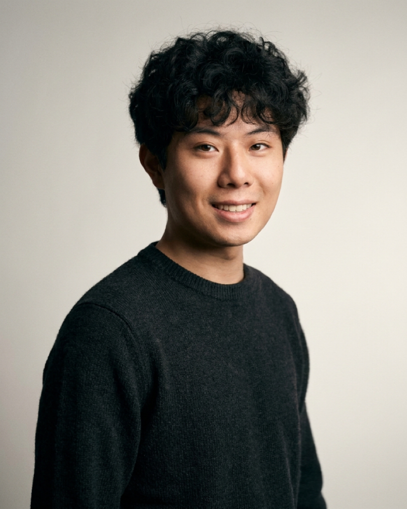

罗昊.
PORTFOLIO
访谈 · 短视频 · 平面与H5
LUO HAO · SELECTED WORKSSELECTED SEQUENCE01 — 03
访谈
WORK ARCHIVE.
A SPACE FOR IDEAS.
A PLACE FOR WHAT'S NEXT.
A LITTLE ABOUT MEBEHIND THE WORK

罗昊.
数字媒体技术
下一个想法，
一起发生
LET'S MAKE SOMETHING.
PORTFOLIO
访谈 · 短视频 · 平面与H5
LUO HAO · SELECTED WORKSA SPACE FOR IDEAS.
A PLACE FOR WHAT'S NEXT.

数字媒体技术
LET'S MAKE SOMETHING.